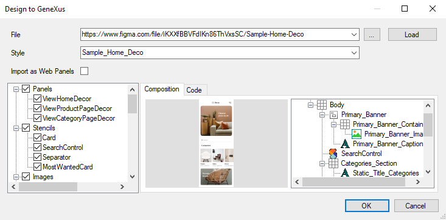
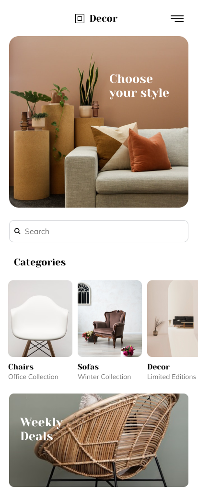
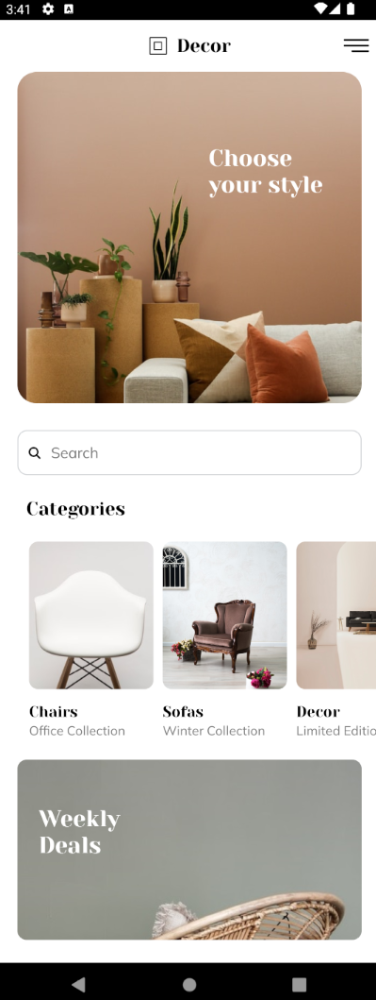
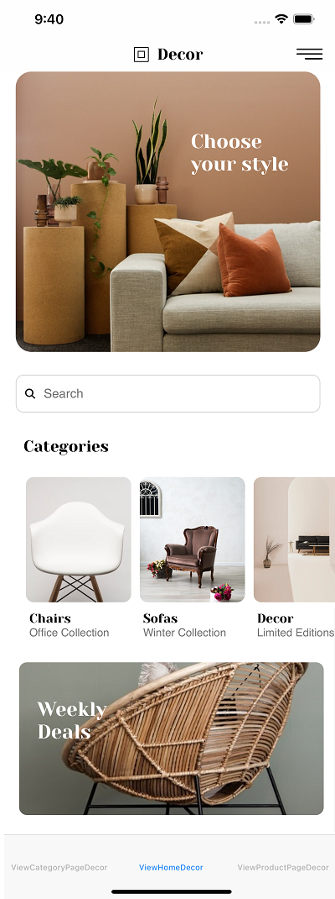
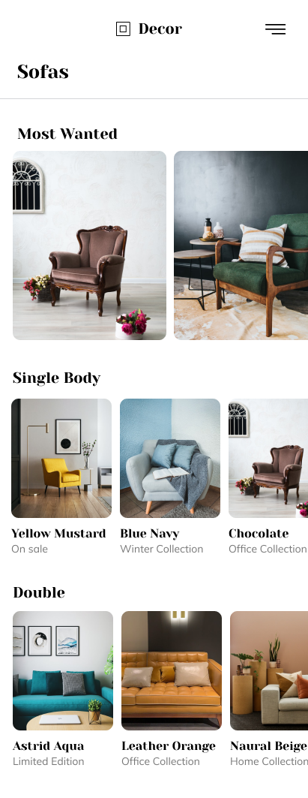
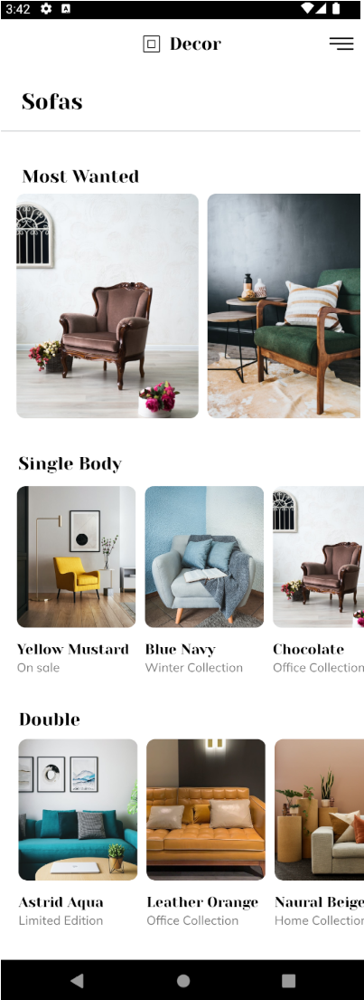
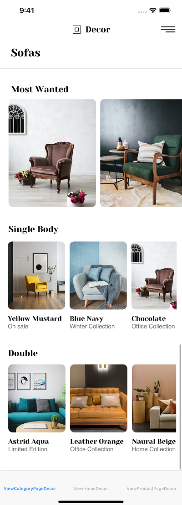
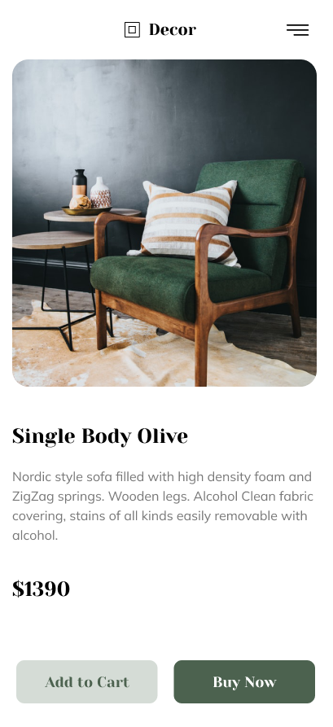
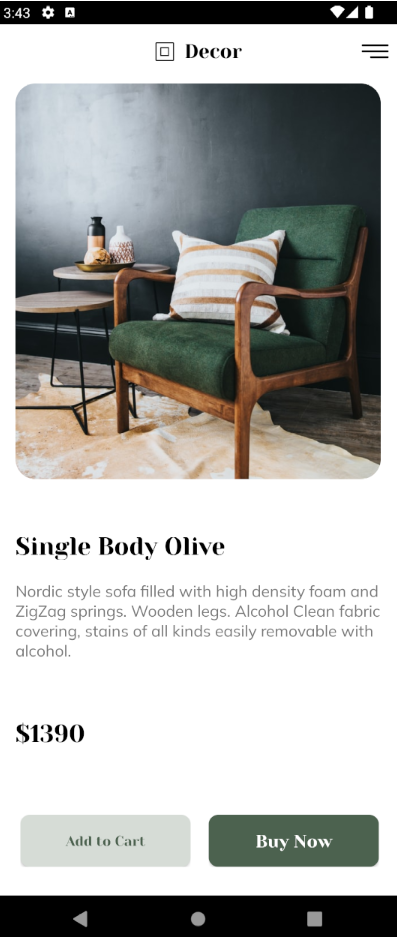
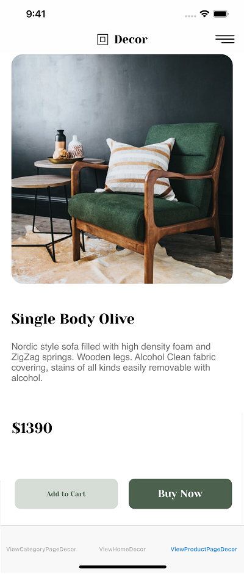

DesignOps - Sample - Home Deco (Figma)
This article is about a design file for a Home Deco mobile front end made with the Figma design tool.
Sample resource

First, save a local copy to your Figma account as follows:
- Log in to your Figma account (or create a new Figma account).
- Open the Home Deco sample provided (you have a read-only view).
- Go to File > Save Local Copy; it will download a file with .fig extension.
- Go to your dashboard.
- Look for the "Import file" option and select the .fig file downloaded in step (3).
- Now you have a local copy of the Figma file.
Next, follow the instructions of HowTo: Export a Figma design with your local copy.
Importing Figma file
Basically, you must follow the instructions described in the Design Import option article.
Once you paste your Figma URL in the File field of the Design Import option, you can start the inspection process by clicking on the Load button (it will ask you for the Figma Token). After processing every file retrieved from Figma, the Design Import dialog will display a preview as follows:
|  |
You can inspect every node in the left-side tree. Every type of node will show context information; for example, preview (image and layout tree) and GXML code in case of Panels; only GXML code in case of a Design System for describing tokens and styles; a preview for Images and Fonts, etc. Also, you can select/unselect the nodes depending on whether or not you want to import them.
Once the import has finished, check the generated panels and how they look. Also, check the tokens/styles in the Design System object, Image objects, and File objects (fonts) imported.
Finally, if you agree with the objects to be generated, you can click on the OK button and start importing the design into the Knowledge Base.
Runtime execution
Lastly, run the generated Main menu object to view the generated panels.
Here is a preview of all three panels, showing how they were designed (Top-Level Frame column) and how they look at runtime without making any changes (Android/iOS columns).
| Designer | Developer | |||
| Sketch | Artboard | GeneXus | Android | iOS |
| Home Decor |  | ViewHomeDecor |  |  |
| Category Page Decor |  | ViewCategoryPageDecor |  |  |
| Product Page Decor |  | ViewProductPageDecor |  |  |
You may notice a few differences between the design and how it looks at runtime, but you as a developer can make adjustments and achieve a perfect result.
Anyway, all panels were almost perfect on the first try!
Scope
| Generators | Android, Apple |
See also
- Guide for designers
- Guide for developers
- Export design from Figma
- Keep improving your Design Workflow with the new Import from Figma (Webinar)
Availability
This sample has been made for GeneXus 17 Upgrade 10 and above.
| Backlinks |
| Toc:DesignOps and GeneXus |